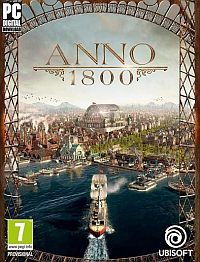

All about games

Anno 1800 jest kolejną odsłoną popularnego cyklu strategii ekonomicznych,
nad którą pieczę sprawuje należące do firmy Ubisoft studio Blue Byte.
Produkcja trafiła na platformę PC,
a jak sugeruje tytuł jej akcja została osadzona w czasach rewolucji przemysłowej – mowa o epoce doniosłych odkryć geograficznych i naukowych oraz wszechobecnej industrializacji.
Sid Meier’s Civilization VI to szósta odsłona legendarnej serii strategii turowych,
pozwalających zbudować i rozwijać imperium na przestrzeni kilku tysięcy lat historii świata.
Deweloperem gry jest studio Firaxis Games, czyli założony przez twórcę serii – Sida Meiera – zespół, zajmujący się rozwijaniem cyklu od czasu Sid Meier's Civilization III.
Frostpunk jest połączeniem strategii czasu rzeczywistego i city buildera,
wzbogaconym o wyraźnie zarysowane elementy survivalowe (twórcy mówią wręcz o opracowaniu nowego gatunku, nazwanego przez nich „society survival”).
Za produkcję odpowiada polski zespół 11 bit studios,
który zdobył światową sławę dzięki ciepło przyjętym grom z serii Anomaly.
The Settlers to tytuł ósmej odsłony kultowego cyklu gier strategicznych,
który narodził się w 1993 roku; produkcja jest jednocześnie rebootem.
Gra została opracowana przez sprawujące pieczę nad rozwojem serii niemieckie studio Blue Byte.
Ten sam zespół od 2006 roku opiekuje się również marką Anno.